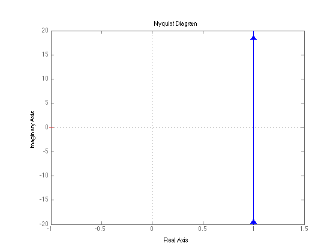
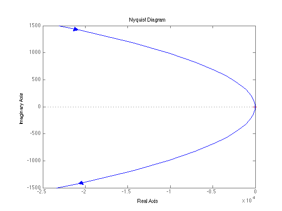
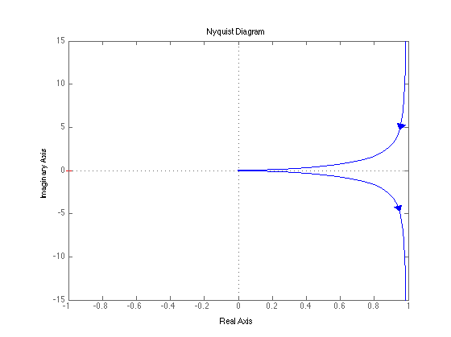
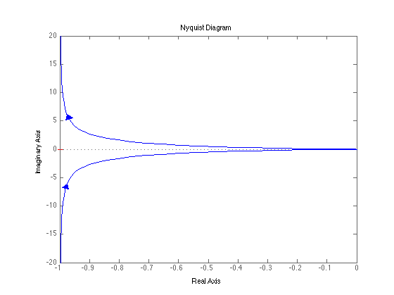
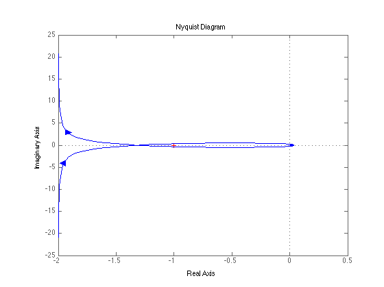

R1 = 1e3; R2 = 1e3; C = 1e-6; C1 = C; K = 1; %Prelab 1 Gc = tf([R2*C*R1, R1], [1, 0]); figure; nyquist(Gc); %Prelab 2 k = 10; tau = .1; Gm = tf([k], [tau 1 0]); figure; nyquist(Gc*Gm); % Postlab Gc_pid = tf(conv([-R2*C -1], [R1*C1 R2]),[R1*C1 1+R2]); G_pid = Gc_pid*Gm; figure; nyquist(G_pid); Gc_k = tf([K], [1]); figure; nyquist(Gc_k*Gm); G_vel = tf([k], [tau 1 k]); figure; nyquist(G_vel*Gm)    